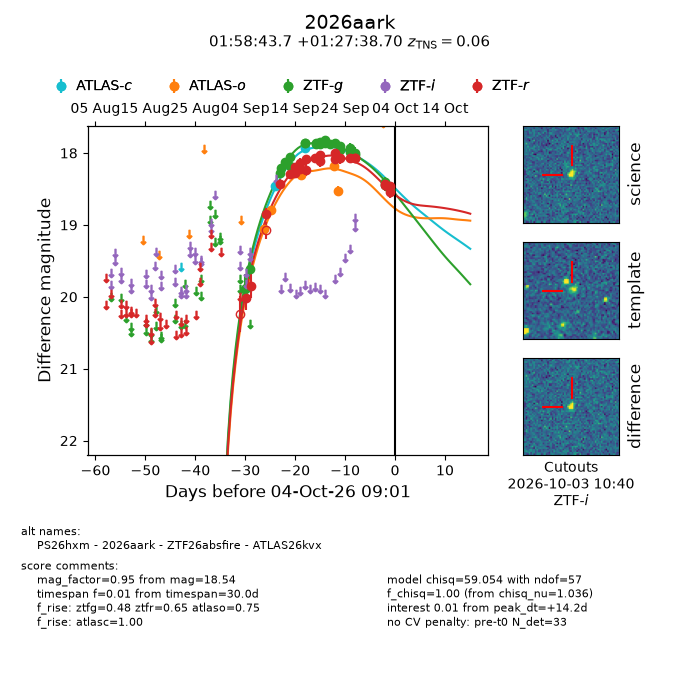
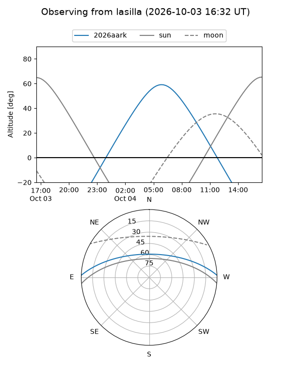
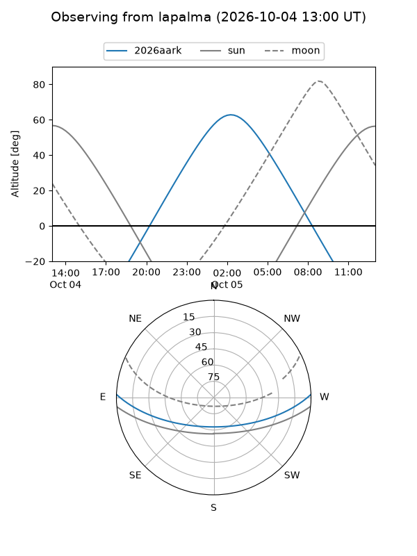
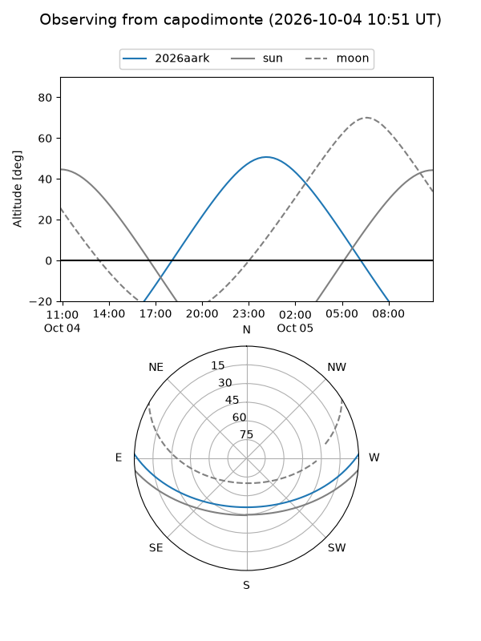
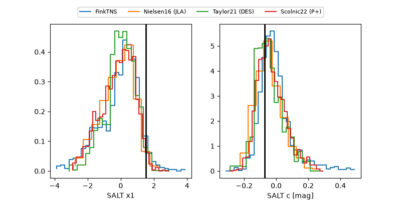

2026aark
Target 2026aark at 2026-10-04 09:03
Aliases and brokers:
FINK-ZTF: ztf.fink-portal.org/ZTF26absfire
Lasair-ZTF: lasair-ztf.lsst.ac.uk/objects/ZTF26absfire
ALeRCE-ZTF: alerce.online/object/ZTF26absfire
YSE-PZ: ziggy.ucolick.org/yse/transient_detail/2026aark
TNS name: wis-tns.org/object/2026aark
Direct TNS query: direct search
alt names
ZTF26absfire (ztf,fink_ztf)
2026aark (tns,yse)
ATLAS26kvx (atlas)
PS26hxm (panstarrs)
Coordinates:
equatorial (ra, dec) = 29.6819,+1.46075
equatorial (HMS+DMS) = 01:58:43.66,+01:27:38.70
galactic (l, b) = (155.1547,-57.14026)
Flags:
TNS type: SN Ia-91T-like
TNS redshift: 0.0600
peak dt: +14.2
Photometry:
last atlasc=17.93, atlaso=18.53, ztfg=18.51, ztfr=18.54
2 atlasc, 5 atlaso, 28 ztfg, 24 ztfr detections
Lightcurve

Visibility



Additional plots
